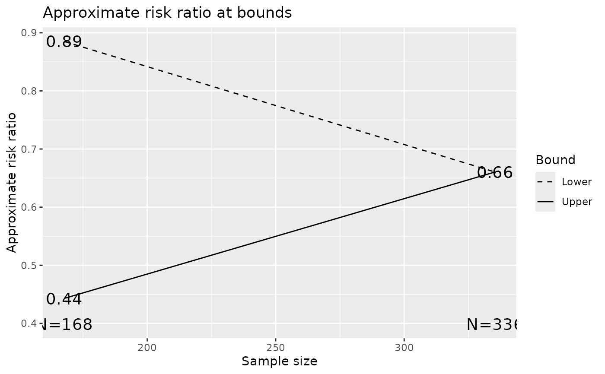

A tabular summary of a group sequential design's bounds and their properties
are often useful. The 'vintage' print.gsDesign() function provides a
complete but minimally formatted summary of a group sequential design
derived by gsDesign(). A brief description of the overall design can
also be useful (summary.gsDesign(). A tabular summary of boundary
characteristics oriented only towards LaTeX output is produced by
xtable.gsSurv. More flexibility is provided by
gsBoundSummary() which produces a tabular summary of a
user-specifiable set of package-provided boundary properties in a data
frame. This can also be used to along with functions such as
print.data.frame(), write.table(),
write.csv(), write.csv2() or, from the RTF
package, addTable.RTF() (from the rtf package) to produce console or
R Markdown output or output to a variety of file types. xprint() is
provided for LaTeX output by setting default options for
print.xtable when producing tables summarizing design
bounds.
Individual transformation of z-value test statistics for interim and final
analyses are obtained from gsBValue(), gsDelta(),
gsHR() and gsCPz() for B-values, approximate treatment effect
(see details), approximate hazard ratio and conditional power, respectively.
The print.gsDesign function is intended to provide an easier output
to review than is available from a simple list of all the output components.
The gsBoundSummary function is intended to provide a summary of
boundary characteristics that is often useful for evaluating boundary
selection; this outputs an extension of the data.frame class that
sets up default printing without row names using
print.gsBoundSummary. summary.gsDesign, on the other hand,
provides a summary of the overall design at a higher level; this provides
characteristics not included in the gsBoundSummary summary and no
detail concerning interim analysis bounds.
In brief, the computed descriptions of group sequential design bounds are as
follows: Z: Standardized normal test statistic at design bound.
p (1-sided): 1-sided p-value for Z. This will be computed as
the probability of a greater EXCEPT for lower bound when a 2-sided design is
being summarized.
delta at bound: Approximate value of the natural parameter at the
bound. The approximate standardized effect size at the bound is generally
computed as Z/sqrt(n). Calling this theta, this is translated
to the delta using the values delta0 and delta1 from
the input x by the formula delta0 +
(delta1-delta0)/theta1*theta where theta1 is the alternate
hypothesis value of the standardized parameter. Note that this value will be
exponentiated in the case of relative risks, hazard ratios or when the user
specifies logdelta=TRUE. In the case of hazard ratios, the value is
computed instead by gsHR() to be consistent with
plot.gsDesign(). Similarly, the value is computed by gsRR()
when the relative risk is the natural parameter.
Spending: Incremental error spending at each given analysis. For
asymmetric designs, futility bound will have beta-spending summarized.
Efficacy bound always has alpha-spending summarized.
B-value: sqrt(t)*Z where t is the proportion of
information at the analysis divided by the final analysis planned
information. The expected value for B-values is directly proportional to
t.
CP: Conditional power under the estimated treatment difference
assuming the interim Z-statistic is at the study bound
CP H1: Conditional power under the alternate hypothesis treatment
effect assuming the interim test statistic is at the study bound.
PP: Predictive power assuming the interim test statistic is at the
study bound and the input prior distribution for the standardized effect
size. This is the conditional power averaged across the posterior
distribution for the treatment effect given the interim test statistic
value. P{Cross if delta=xx}: For each of the parameter values in
x, the probability of crossing either bound given that treatment
effect is computed. This value is cumulative for each bound. For example,
the probability of crossing the efficacy bound at or before the analysis of
interest.
Usage
# S3 method for class 'gsDesign'
summary(object, information = FALSE, timeunit = "months", ...)
# S3 method for class 'gsDesign'
print(x, ...)
gsBoundSummary(
x,
deltaname = NULL,
logdelta = FALSE,
Nname = NULL,
digits = 4,
ddigits = 2,
tdigits = 0,
timename = "Month",
prior = normalGrid(mu = x$delta/2, sigma = 10/sqrt(x$n.fix)),
POS = FALSE,
ratio = NULL,
exclude = c("B-value", "Spending", "CP", "CP H1", "PP"),
r = 18,
alpha = NULL,
...
)
xprint(
x,
include.rownames = FALSE,
hline.after = c(-1, which(x$Value == x[1, ]$Value) - 1, nrow(x)),
...
)
# S3 method for class 'gsBoundSummary'
print(x, row.names = FALSE, digits = 4, ...)
gsBValue(z, i, x, ylab = "B-value", ...)
gsDelta(z, i, x, ylab = NULL, ...)
gsRR(z, i, x, ratio = 1, ylab = "Approximate risk ratio", ...)
gsHR(z, i, x, ratio = 1, ylab = "Approximate hazard ratio", ...)
gsCPz(z, i, x, theta = NULL, ylab = NULL, ...)Arguments
- object
An item of class
gsDesignorgsSurv- information
indicator of whether
n.Iinobjectrepresents statistical information rather than sample size or event counts.- timeunit
Text string with time units used for time-to-event designs created with
gsSurv()- ...
This allows many optional arguments that are standard when calling
plotforgsBValue,gsDelta,gsHR,gsRRandgsCPz- x
An item of class
gsDesignorgsSurv, except forprint.gsBoundSummary()wherexis an object created bygsBoundSummary()andxprint()which is used withxtable(see examples)- deltaname
Natural parameter name. If default
NULLis used, routine will default to"HR"when class isgsSurvor ifnFixSurvwas input when creatingxwithgsDesign().- logdelta
Indicates whether natural parameter is the natural logarithm of the actual parameter. For example, the relative risk or odds-ratio would be put on the logarithmic scale since the asymptotic behavior is 'more normal' than a non-transformed value. As with
deltaname, the default will be changed to true ifxhas classgsDesignor ifnFixSurv>0was input whenxwas created bygsDesign(); that is, the natural parameter for a time-to-event endpoint will be on the logarithmic scale.- Nname
This will normally be changed to
"N"or, if a time-to-event endpoint is used,"Events". Other immediate possibility are"Deaths"or"Information".- digits
Number of digits past the decimal to be printed in the body of the table.
- ddigits
Number of digits past the decimal to be printed for the natural parameter delta.
- tdigits
Number of digits past the decimal point to be shown for estimated timing of each analysis.
- timename
Text string indicating time unit.
- prior
A prior distribution for the standardized effect size. Must be of the format produced by
normalGrid(), but can reflect an arbitrary prior distribution. The default reflects a normal prior centered half-way between the null and alternate hypothesis with the variance being equivalent to the treatment effect estimate if 1 percent of the sample size for a fixed design were sampled. The prior is intended to be relatively uninformative. This input will only be applied ifPOS=TRUEis input.- POS
This is an indicator of whether or not probability of success (POS) should be estimated at baseline or at each interim based on the prior distribution input in
prior. The prior probability of success before the trial starts is the power of the study averaged over the prior distribution for the standardized effect size. The POS after an interim analysis assumes the interim test statistic is an unknown value between the futility and efficacy bounds. Based on this, a posterior distribution for the standardized parameter is computed and the conditional power of the trial is averaged over this posterior distribution.- ratio
Sample size ratio assumed for experimental to control treatment group sample sizes. This only matters when
xfor a binomial or time-to-event endpoint wheregsRRorgsHRare used for approximating the treatment effect if a test statistic falls on a study bound.- exclude
A list of test statistics to be excluded from design boundary summary produced; see details or examples for a list of all possible output values. A value of
NULLproduces all available summaries.- r
See
gsDesign. This is an integer used to control the degree of accuracy of group sequential calculations which will normally not be changed.- alpha
If used, a vector of alternate alpha-levels to print boundaries for. Only works with test.type 1, 4, and 6. If specified, efficacy bound columns are headed by individual alpha levels. The alpha level of the input design is always included as the first column.
- include.rownames
indicator of whether or not to include row names in output.
- hline.after
table lines after which horizontal separation lines should be set; default is to put lines between each analysis as well as at the top and bottom of the table.
- row.names
indicator of whether or not to print row names
- z
A vector of z-statistics
- i
A vector containing the analysis for each element in
z; each element must be in 1 tox$k, inclusive- ylab
Used when functions are passed to
plot.gsDesignto establish default y-axis labels- theta
A scalar value representing the standardized effect size used for conditional power calculations; see
gsDesign; if NULL, conditional power is computed at the estimated interim treatment effect based onz
Value
gsBValue(), gsDelta(), gsHR() and
gsCPz() each returns a vector containing the B-values, approximate
treatment effect (see details), approximate hazard ratio and conditional
power, respectively, for each value specified by the interim test statistics
in z at interim analyses specified in i.
summary returns a text string summarizing the design at a high level.
This may be used with gsBoundSummary for a nicely formatted, concise
group sequential design description.
gsBoundSummary returns a table in a data frame providing a variety of
boundary characteristics. The tabular format makes formatting particularly
amenable to place in documents either through direct creation of readable by
Word (see the rtf package) or to a csv format readable by spreadsheet
software using write.csv.
print.gsDesign prints an overall summary a group sequential design.
While the design description is complete, the format is not as `document
friendly' as gsBoundSummary.
print.gsBoundSummary is a simple extension of print.data.frame
intended for objects created with gsBoundSummary. The only extension
is to make the default to not print row names. This is probably `not good R
style' but may be helpful for many lazy R programmers like the author.
Note
The gsDesign technical manual is available at https://keaven.github.io/gsd-tech-manual/.
References
Jennison C and Turnbull BW (2000), Group Sequential Methods with Applications to Clinical Trials. Boca Raton: Chapman and Hall.
Author
Keaven Anderson keaven_anderson@merck.com
Examples
library(ggplot2)
# survival endpoint using gsSurv
# generally preferred over nSurv since time computations are shown
xgs <- gsSurv(lambdaC = .2, hr = .5, eta = .1, T = 2, minfup = 1.5)
gsBoundSummary(xgs, timename = "Year", tdigits = 1)
#> Analysis Value Efficacy Futility
#> IA 1: 33% Z 3.0107 -0.2388
#> N: 460 p (1-sided) 0.0013 0.5944
#> Events: 33 ~HR at bound 0.3457 1.0879
#> Year: 0.8 P(Cross) if HR=1 0.0013 0.4056
#> P(Cross) if HR=0.5 0.1412 0.0148
#> IA 2: 67% Z 2.5465 0.9410
#> N: 460 p (1-sided) 0.0054 0.1733
#> Events: 65 ~HR at bound 0.5298 0.7907
#> Year: 1.3 P(Cross) if HR=1 0.0062 0.8347
#> P(Cross) if HR=0.5 0.5815 0.0437
#> Final Z 1.9992 1.9992
#> N: 460 p (1-sided) 0.0228 0.0228
#> Events: 97 ~HR at bound 0.6655 0.6655
#> Year: 2 P(Cross) if HR=1 0.0233 0.9767
#> P(Cross) if HR=0.5 0.9000 0.1000
summary(xgs)
#> [1] "Asymmetric two-sided group sequential design with non-binding futility bound, 3 analyses, time-to-event outcome with sample size 460 and 97 events required, 90 percent power, 2.5 percent (1-sided) Type I error to detect a hazard ratio of 0.5. Enrollment and total study durations are assumed to be 0.5 and 2 months, respectively. Efficacy bounds derived using a Hwang-Shih-DeCani spending function with gamma = -4. Futility bounds derived using a Hwang-Shih-DeCani spending function with gamma = -2."
# survival endpoint using nSurvival
# NOTE: generally recommend gsSurv above for this!
ss <- nSurvival(
lambda1 = .2, lambda2 = .1, eta = .1, Ts = 2, Tr = .5,
sided = 1, alpha = .025, ratio = 2
)
xs <- gsDesign(nFixSurv = ss$n, n.fix = ss$nEvents, delta1 = log(ss$lambda2 / ss$lambda1))
gsBoundSummary(xs, logdelta = TRUE, ratio = ss$ratio)
#> Analysis Value Efficacy Futility
#> IA 1: 33% Z 3.0107 -0.2387
#> N: 34 p (1-sided) 0.0013 0.5943
#> ~HR at bound 0.3306 1.0917
#> P(Cross) if HR=1 0.0013 0.4057
#> P(Cross) if HR=0.5 0.1412 0.0148
#> IA 2: 67% Z 2.5465 0.9411
#> N: 67 p (1-sided) 0.0054 0.1733
#> ~HR at bound 0.5158 0.7830
#> P(Cross) if HR=1 0.0062 0.8347
#> P(Cross) if HR=0.5 0.5815 0.0437
#> Final Z 1.9992 1.9992
#> N: 100 p (1-sided) 0.0228 0.0228
#> ~HR at bound 0.6542 0.6542
#> P(Cross) if HR=1 0.0233 0.9767
#> P(Cross) if HR=0.5 0.9000 0.1000
# generate some of the above summary statistics for the upper bound
z <- xs$upper$bound
# B-values
gsBValue(z = z, i = 1:3, x = xs)
#> [1] 1.738251 2.079233 1.999226
# hazard ratio
gsHR(z = z, i = 1:3, x = xs)
#> [1] 0.3521851 0.5357126 0.6702573
# conditional power at observed treatment effect
gsCPz(z = z[1:2], i = 1:2, x = xs)
#> [1] 0.9999676 0.9737643
# conditional power at H1 treatment effect
gsCPz(z = z[1:2], i = 1:2, x = xs, theta = xs$delta)
#> [1] 0.9937804 0.9809768
# information-based design
xinfo <- gsDesign(delta = .3, delta1 = .3)
gsBoundSummary(xinfo, Nname = "Information")
#> Analysis Value Efficacy Futility
#> IA 1: 33% Z 3.0107 -0.2387
#> Information: 41.64 p (1-sided) 0.0013 0.5943
#> ~delta at bound 0.4666 -0.0370
#> P(Cross) if delta=0 0.0013 0.4057
#> P(Cross) if delta=0.3 0.1412 0.0148
#> IA 2: 67% Z 2.5465 0.9411
#> Information: 83.27 p (1-sided) 0.0054 0.1733
#> ~delta at bound 0.2791 0.1031
#> P(Cross) if delta=0 0.0062 0.8347
#> P(Cross) if delta=0.3 0.5815 0.0437
#> Final Z 1.9992 1.9992
#> Information: 124.91 p (1-sided) 0.0228 0.0228
#> ~delta at bound 0.1789 0.1789
#> P(Cross) if delta=0 0.0233 0.9767
#> P(Cross) if delta=0.3 0.9000 0.1000
# show all available boundary descriptions
gsBoundSummary(xinfo, Nname = "Information", exclude = NULL)
#> Analysis Value Efficacy Futility
#> IA 1: 33% Z 3.0107 -0.2387
#> Information: 41.64 p (1-sided) 0.0013 0.5943
#> ~delta at bound 0.4666 -0.0370
#> Spending 0.0013 0.0148
#> B-value 1.7383 -0.1378
#> CP 1.0000 0.0012
#> CP H1 0.9938 0.4689
#> PP 0.9897 0.0373
#> P(Cross) if delta=0 0.0013 0.4057
#> P(Cross) if delta=0.3 0.1412 0.0148
#> IA 2: 67% Z 2.5465 0.9411
#> Information: 83.27 p (1-sided) 0.0054 0.1733
#> ~delta at bound 0.2791 0.1031
#> Spending 0.0049 0.0289
#> B-value 2.0792 0.7684
#> CP 0.9738 0.0713
#> CP H1 0.9810 0.4223
#> PP 0.9427 0.1157
#> P(Cross) if delta=0 0.0062 0.8347
#> P(Cross) if delta=0.3 0.5815 0.0437
#> Final Z 1.9992 1.9992
#> Information: 124.91 p (1-sided) 0.0228 0.0228
#> ~delta at bound 0.1789 0.1789
#> Spending 0.0188 0.0563
#> B-value 1.9992 1.9992
#> P(Cross) if delta=0 0.0233 0.9767
#> P(Cross) if delta=0.3 0.9000 0.1000
# add intermediate parameter value
xinfo <- gsProbability(d = xinfo, theta = c(0, .15, .3))
class(xinfo) # note this is still as gsDesign class object
#> [1] "gsDesign"
gsBoundSummary(xinfo, Nname = "Information")
#> Analysis Value Efficacy Futility
#> IA 1: 33% Z 3.0107 -0.2387
#> Information: 41.64 p (1-sided) 0.0013 0.5943
#> ~delta at bound 0.4666 -0.0370
#> P(Cross) if delta=0 0.0013 0.4057
#> P(Cross) if delta=0.15 0.0205 0.1138
#> P(Cross) if delta=0.3 0.1412 0.0148
#> IA 2: 67% Z 2.5465 0.9411
#> Information: 83.27 p (1-sided) 0.0054 0.1733
#> ~delta at bound 0.2791 0.1031
#> P(Cross) if delta=0 0.0062 0.8347
#> P(Cross) if delta=0.15 0.1243 0.3523
#> P(Cross) if delta=0.3 0.5815 0.0437
#> Final Z 1.9992 1.9992
#> Information: 124.91 p (1-sided) 0.0228 0.0228
#> ~delta at bound 0.1789 0.1789
#> P(Cross) if delta=0 0.0233 0.9767
#> P(Cross) if delta=0.15 0.3636 0.6364
#> P(Cross) if delta=0.3 0.9000 0.1000
# now look at a binomial endpoint; specify H0 treatment difference as p1-p2=.05
# now treatment effect at bound (say, thetahat) is transformed to
# xp$delta0 + xp$delta1*(thetahat-xp$delta0)/xp$delta
np <- nBinomial(p1 = .15, p2 = .10)
xp <- gsDesign(n.fix = np, endpoint = "Binomial", delta1 = .05)
summary(xp)
#> [1] "Asymmetric two-sided group sequential design with non-binding futility bound, 3 analyses, sample size 1963, 90 percent power, 2.5 percent (1-sided) Type I error. Efficacy bounds derived using a Hwang-Shih-DeCani spending function with gamma = -4. Futility bounds derived using a Hwang-Shih-DeCani spending function with gamma = -2."
gsBoundSummary(xp, deltaname = "p[C]-p[E]")
#> Analysis Value Efficacy Futility
#> IA 1: 33% Z 3.0107 -0.2387
#> N: 655 p (1-sided) 0.0013 0.5943
#> ~p[C]-p[E] at bound 0.0778 -0.0062
#> P(Cross) if p[C]-p[E]=0 0.0013 0.4057
#> P(Cross) if p[C]-p[E]=0.05 0.1412 0.0148
#> IA 2: 67% Z 2.5465 0.9411
#> N: 1309 p (1-sided) 0.0054 0.1733
#> ~p[C]-p[E] at bound 0.0465 0.0172
#> P(Cross) if p[C]-p[E]=0 0.0062 0.8347
#> P(Cross) if p[C]-p[E]=0.05 0.5815 0.0437
#> Final Z 1.9992 1.9992
#> N: 1963 p (1-sided) 0.0228 0.0228
#> ~p[C]-p[E] at bound 0.0298 0.0298
#> P(Cross) if p[C]-p[E]=0 0.0233 0.9767
#> P(Cross) if p[C]-p[E]=0.05 0.9000 0.1000
# estimate treatment effect at lower bound
# by setting delta0=0 (default) and delta1 above in gsDesign
# treatment effect at bounds is scaled to these differences
# in this case, this is the difference in event rates
gsDelta(z = xp$lower$bound, i = 1:3, xp)
#> [1] -0.006166098 0.017187789 0.029813687
# binomial endpoint with risk ratio estimates
n.fix <- nBinomial(p1 = .3, p2 = .15, scale = "RR")
xrr <- gsDesign(k = 2, n.fix = n.fix, delta1 = log(.15 / .3), endpoint = "Binomial")
gsBoundSummary(xrr, deltaname = "RR", logdelta = TRUE)
#> Analysis Value Efficacy Futility
#> IA 1: 50% Z 2.7500 0.4122
#> N: 168 p (1-sided) 0.0030 0.3401
#> ~RR at bound 0.4429 0.8851
#> P(Cross) if RR=1 0.0030 0.6599
#> P(Cross) if RR=0.5 0.3412 0.0269
#> Final Z 1.9811 1.9811
#> N: 336 p (1-sided) 0.0238 0.0238
#> ~RR at bound 0.6605 0.6605
#> P(Cross) if RR=1 0.0239 0.9761
#> P(Cross) if RR=0.5 0.9000 0.1000
gsRR(z = xp$lower$bound, i = 1:3, xrr)
#> [1] 1.0732500 0.8211496 NA
plot(xrr, plottype = "RR")

# delta is odds-ratio: sample size slightly smaller than for relative risk or risk difference
n.fix <- nBinomial(p1 = .3, p2 = .15, scale = "OR")
xOR <- gsDesign(k = 2, n.fix = n.fix, delta1 = log(.15 / .3 / .85 * .7), endpoint = "Binomial")
gsBoundSummary(xOR, deltaname = "OR", logdelta = TRUE)
#> Analysis Value Efficacy Futility
#> IA 1: 50% Z 2.7500 0.4122
#> N: 166 p (1-sided) 0.0030 0.3401
#> ~OR at bound 0.3526 0.8553
#> P(Cross) if OR=1 0.0030 0.6599
#> P(Cross) if OR=0.41 0.3412 0.0269
#> Final Z 1.9811 1.9811
#> N: 332 p (1-sided) 0.0238 0.0238
#> ~OR at bound 0.5880 0.5880
#> P(Cross) if OR=1 0.0239 0.9761
#> P(Cross) if OR=0.41 0.9000 0.1000
# for nice LaTeX table output, use xprint
xprint(xtable::xtable(gsBoundSummary(xOR, deltaname = "OR", logdelta = TRUE),
caption = "Table caption."
))
#> % latex table generated in R 4.5.2 by xtable 1.8-4 package
#> % Sun Dec 7 01:28:45 2025
#> \begin{table}[ht]
#> \centering
#> \begin{tabular}{llrr}
#> \hline
#> Analysis & Value & Efficacy & Futility \\
#> \hline
#> IA 1: 50\% & Z & 2.75 & 0.41 \\
#> N: 166 & p (1-sided) & 0.00 & 0.34 \\
#> & \~{}OR at bound & 0.35 & 0.86 \\
#> & P(Cross) if OR=1 & 0.00 & 0.66 \\
#> & P(Cross) if OR=0.41 & 0.34 & 0.03 \\
#> \hline
#> Final & Z & 1.98 & 1.98 \\
#> N: 332 & p (1-sided) & 0.02 & 0.02 \\
#> & \~{}OR at bound & 0.59 & 0.59 \\
#> & P(Cross) if OR=1 & 0.02 & 0.98 \\
#> & P(Cross) if OR=0.41 & 0.90 & 0.10 \\
#> \hline
#> \end{tabular}
#> \caption{Table caption.}
#> \end{table}